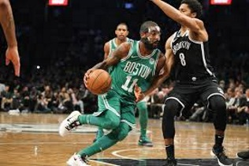
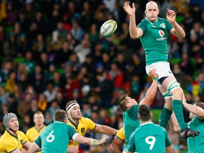

Sports
I first developed an interest in sports when was just a toddler.
The two sports I'm most interested in are Soccer and Basketball.
Soccer
I first started playing soccer when I was 5 years old and haven't stopped since.
I've played with multiple clubs, such as Mallow United and Buttevant FC.
The team I support is Chelsea FC.
I try to go see at least 1 Chelsea match per season in England.
I also follow the Irish National Team as best as I can.
James McClean would be my favourite Irish player, due to his tenacity and work ethic.


Basketball
I first started playing basketball when I was 10 years old.
I played Mallow Basketball Club until I was 16 years old.
I switched between goalkeeper and centre back as positions, as I would get bored playing in one position for too long
I've recently started playing again, albeit on a casual basis.
I also follow the NBA quite a bit.
The team I support in the NBA is the Boston Celtics.
My favourite player would be Kyrie Irving, as he is one of the best finishers at the rim, and is very exciting to watch.


Rugby
I first started playing rugby when I was 8 years old.
I played on and off with Mallow RFC throughout my childhood
Rugby was perhaps my favourite sport to play, however it caused me to get injured quite a bit
I don't follow professional rugby as much as I would with soccer and basketball, but I do try to watch the odd game
I do follow the Irish National Team, especially during the Six Nations and World Cup.
Conor Murray is my favourite player, due to him being, in my opinion, the best scrum half in the world.
